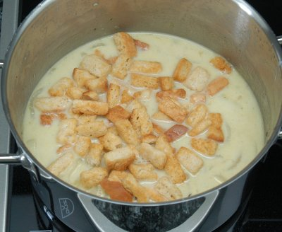

| Zutaten für 4 Personen: | |
| 400 g | Zwiebeln |
| 1 | Knoblauchzehe |
| 50 g | Butter |
| 1 EL | Mehl |
| 1.5 l | Bouillon |
| Salz, Pfeffer | |
| 1 TL | Kümmel |
| 2 dl | Sauerrahm |
Zwiebeln schälen und in sehr feine Scheiben schneiden. Knoblauchzehe durch die Presse drücken. Fleischbrühe erhitzen.
Butter in einer Pfanne schmelzen lassen. Zwiebelscheiben und Knoblauch darin glasig dünsten.
Das Mehl darüber stäuben und mit dem Holzlöffel rühren, bis es goldgelb ist. Kümmel zugeben.
Die heisse Fleischbrühe nach und nach zugiessen und alles etwa 20 Minuten kochen.
Rahm unterrühren und etwas einkochen lassen. Suppe mit frisch gemahlenem Pfeffer und Salz nach Geschmack würzen.
Mit Brotcroûtons servieren (Brot in Butter backen, geriebenen Käse darüber streuen und im Backofen kurz gratinieren).
Herbert Eigenmann, Code: ZLP
Hat besser geschmeckt als erwartet. Sehr einfach zubereitet und die Croûtons vom Migros passen auch ganz gut dazu. RE, 10.5.2008